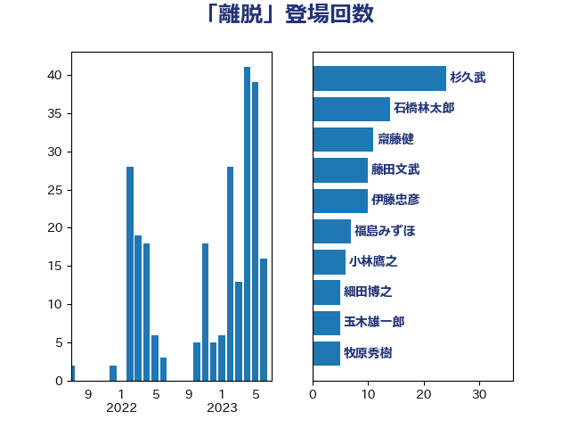

単語「離脱」

| 杉久武 | 公明党 | 24 回 |
| 石橋林太郎 | 自由民主党 | 14 回 |
| 齋藤健 | 自由民主党 | 11 回 |
| 藤田文武 | 日本維新の会 | 10 回 |
| 伊藤忠彦 | 自由民主党 | 10 回 |
| 福島みずほ | 社会民主党 | 7 回 |
| 小林鷹之 | 自由民主党 | 6 回 |
| 細田博之 | 自由民主党 | 5 回 |
| 玉木雄一郎 | 国民民主党 | 5 回 |
| 牧原秀樹 | 自由民主党 | 5 回 |
| 大塚耕平 | 国民民主党 | 5 回 |
| 米山隆一 | 立憲民主党 | 4 回 |
| 川合孝典 | 国民民主党 | 4 回 |
| 岸田文雄 | 自由民主党 | 4 回 |
| 吉田宣弘 | 公明党 | 4 回 |
| 伊藤孝恵 | 国民民主党 | 4 回 |
| 野田佳彦 | 立憲民主党 | 3 回 |
| 菊田真紀子 | 立憲民主党 | 3 回 |
| 羽田次郎 | 立憲民主党 | 3 回 |
| 早稲田ゆき | 立憲民主党 | 3 回 |
| 音喜多駿 | 日本維新の会 | 2 回 |
| 稲津久 | 公明党 | 2 回 |
| 石橋通宏 | 立憲民主党 | 2 回 |
| 沢田良 | 日本維新の会 | 2 回 |
| 山口俊一 | 自由民主党 | 2 回 |
| 尾辻秀久 | 無所属 | 2 回 |
| 吉良州司 | 無所属 | 2 回 |
| 北神圭朗 | 無所属 | 2 回 |
| 加藤勝信 | 自由民主党 | 2 回 |
| 高良鉄美 | 無所属 | 1 回 |
| 馬淵澄夫 | 立憲民主党 | 1 回 |
| 階猛 | 立憲民主党 | 1 回 |
| 鈴木義弘 | 国民民主党 | 1 回 |
| 金子道仁 | 日本維新の会 | 1 回 |
| 近藤昭一 | 立憲民主党 | 1 回 |
| 赤嶺政賢 | 日本共産党 | 1 回 |
| 萩生田光一 | 自由民主党 | 1 回 |
| 穀田恵二 | 日本共産党 | 1 回 |
| 稲富修二 | 立憲民主党 | 1 回 |
| 福重隆浩 | 公明党 | 1 回 |
| 石川大我 | 立憲民主党 | 1 回 |
| 石井準一 | 自由民主党 | 1 回 |
| 盛山正仁 | 自由民主党 | 1 回 |
| 牧山ひろえ | 立憲民主党 | 1 回 |
| 河野太郎 | 自由民主党 | 1 回 |
| 河西宏一 | 公明党 | 1 回 |
| 森山浩行 | 立憲民主党 | 1 回 |
| 梅村みずほ | 日本維新の会 | 1 回 |
| 林芳正 | 自由民主党 | 1 回 |
| 松原仁 | 立憲民主党 | 1 回 |
| 杉本和巳 | 日本維新の会 | 1 回 |
| 本村伸子 | 日本共産党 | 1 回 |
| 本庄知史 | 立憲民主党 | 1 回 |
| 日下正喜 | 公明党 | 1 回 |
| 斉藤鉄夫 | 公明党 | 1 回 |
| 徳永久志 | 無所属 | 1 回 |
| 後藤祐一 | 立憲民主党 | 1 回 |
| 平木大作 | 公明党 | 1 回 |
| 山下貴司 | 自由民主党 | 1 回 |
| 小宮山泰子 | 立憲民主党 | 1 回 |
| 奥野総一郎 | 立憲民主党 | 1 回 |
| 太栄志 | 立憲民主党 | 1 回 |
| 大島敦 | 立憲民主党 | 1 回 |
| 大塚拓 | 自由民主党 | 1 回 |
| 和田政宗 | 自由民主党 | 1 回 |
| 吉田久美子 | 公明党 | 1 回 |
| 吉田はるみ | 立憲民主党 | 1 回 |
| 古川禎久 | 自由民主党 | 1 回 |
| 友納理緒 | 自由民主党 | 1 回 |
| 勝部賢志 | 立憲民主党 | 1 回 |
| 伊藤俊輔 | 立憲民主党 | 1 回 |
| 中川郁子 | 自由民主党 | 1 回 |
| 中川正春 | 立憲民主党 | 1 回 |
| 世耕弘成 | 自由民主党 | 1 回 |